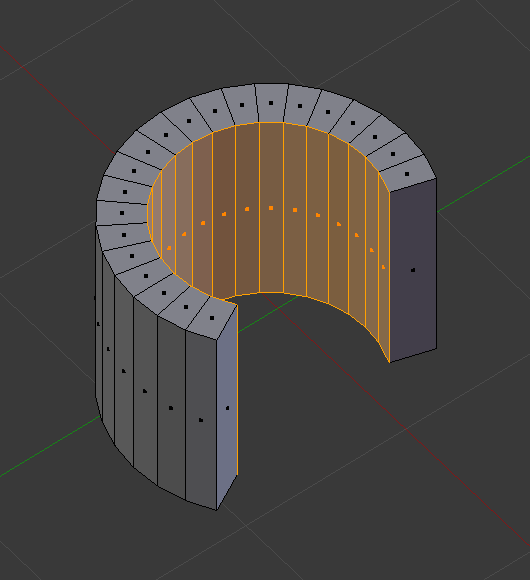

面工具¶
参考
| 模式: | 编辑模式 |
|---|---|
| 菜单: | |
| 快捷键: | Ctrl-F |
这些工具用于操作面。


填充¶
参考
| 模式: | 编辑模式 |
|---|---|
| 菜单: | |
| 快捷键: | Alt-F |
填充 工具从任意选中的边或顶点创建 三角 面，只要它们可以组成一个或多个完整的线环。
- 布线优化
- 整理新生成的三角面。

使用填充工具填充后。
注意，与创建多边形不同的是， 填充 支持孔洞。

带有孔洞的闭合线环。 |

使用填充工具填充后。 |
完美建面¶
参考
| 模式: | 编辑模式 |
|---|---|
| 菜单: | |
| 快捷键: | Shift-Alt-F |
完美建面 仅作用于现有选中面，通过重新排布选中的三角面，获得更加 平衡的 三角面(即减少细长三角面)。
- 最大角度
- 限制边线旋转，获得平整表面。

转换为网格的文本。 |
栅格填充¶
参考
| 模式: | 编辑模式 |
|---|---|
| 菜单: |
栅格填充 使用一对相连的循环边，或单个闭合的循环边，沿四周几何形状填充栅格。
如果选择两组顶点数相同的相对的循环边可以获得最佳的预期结果。当选择单个闭合循环边时，跨分/偏移量选项用于调整从一组闭合循环边中侦测出两组相对循环边的方式。
- 跨分
- 指定栅格中的列数。
- 偏移量
- 定义被认为是网格的角点的顶点，默认情况下，它是活动顶点。偏移量可以旋转网格线.
- 简单混合
- 使用简单的插值算法从边界循环生成网格顶点，这不会尝试保持形状，对于平面或者保持形状给出奇数结果的情况非常有用。

输入。 |

栅格填充结果。 |
实体化¶
参考
| 模式: | 编辑模式 |
|---|---|
| 菜单: |
This takes a selection of faces and solidifies them by extruding them uniformly to give volume to a non-manifold surface. This is also available as a Modifier. After using the tool, you can set the offset distance in the 调整上一步操作 panel.
- 厚度
- 新生成面的偏移量。正值沿法线方向向内偏移挤出，负值向外挤出。

实体化前网格。 |

正厚度值实体化。 |

负厚度值实体化。 |
交集¶
交集(切割)¶
参考
| 模式: | 编辑模式 |
|---|---|
| 菜单: |
相交工具用于将交叉部分切割为几何体。这有些类似布尔工具，不过无法计算内部/外部。沿交叉边缘分开表面，并选中新增的边。
- 源
- 选中/非选中
- 操作选中与未选中几何体的相交部分。
- 自身交集
- 操作选中网格的重叠部分。
- 分离模式
- 所有
- 沿新增边线分离几何体。
- 剪切
- 保持交集操作前的几何形状，不对面进行分离。
- 合并
- 合并所有参与交集操作的几何元素。
- 合并阈值
- 见交集(布尔)。
线框¶
参考
| 模式: | 编辑模式 |
|---|---|
| 菜单: |
The Wireframe tool makes a wireframe from faces by turning edges into wireframe tubes, similar to the 线框修改器.
尖分面¶
参考
| 模式: | 编辑模式 |
|---|---|
| 菜单: | |
| 快捷键: | Alt-P |
将每个选中面都切分为扇形三角面，创建一个新的中心顶点，并使用原始边和新的中心顶点创建三角面。可使用 偏移量 来制作尖刺或凹坑。
- 尖分偏移
- 沿面的法向偏移新的中心顶点。
- 相对偏移
- 将偏移量乘以从中心到面顶点的平均长度。
- 尖分中心
计算面中心.
- 加权平均计算
- 使用边长加权平均值。
- 平均值
- 使用平均值.
- 边界范围
- 使用边界盒的中心.
三角面 -> 四边面¶
参考
| 模式: | 编辑模式 |
|---|---|
| 菜单: | |
| 快捷键: | Alt-J |
此工具基于阈值，通过移除相邻两三角面的相邻边，创建四边面，将选中三角面转换为四边面。选中多个三角面后可调用该工具。
这意味着可以选中整个网格，对已经构成四边形的三角面进行转换 - 在转换为四边面时无需顾虑单个的面。
还可选中一对三角面，来强制执行该操作(其他合并方式见下文提示)。
To create a quad, this tool needs at least two adjacent triangles. If you have an even number of selected triangles, it is also possible not to obtain only quads. In fact, this tool tries to create most even rectangular quads from the given triangles, which means some triangles could remain.

三角面转四边面之前。 |

将三角到四边形后。 |
所有菜单和快捷键使用 操作 面板中定义的设定:
- 最大角度
- 用于控制该工具起作用的相邻三角面夹角阈值(介于0到180之间)。阈值设置为0.0时 ，仅合并构成完美矩形的相邻三角形(也就是共用斜边的直角三角形)。当两三角形的公共边较三角形其他边较短时，需调大阈值。
- 比较UV
- 启用后，将阻止UV映射中非相邻三角面的合并。
- 比较顶点色
- 启用后，将阻止顶点色不匹配的三角面的合并。
- 比较锐边
- 启用后，将阻止共用边为锐边的三角面的合并。
- 比较材质
- 启用后，将阻止使用非相同材质的三角面的合并。

{kind=link}
{kind=link}
{kind=link}